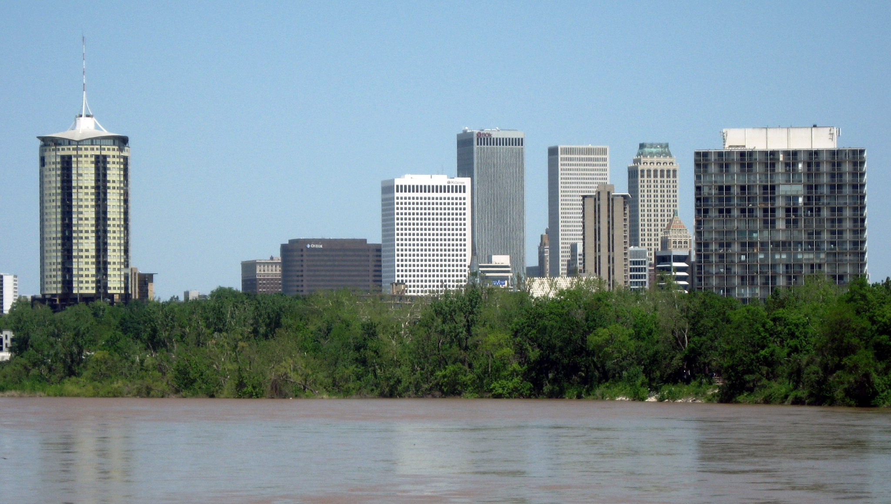
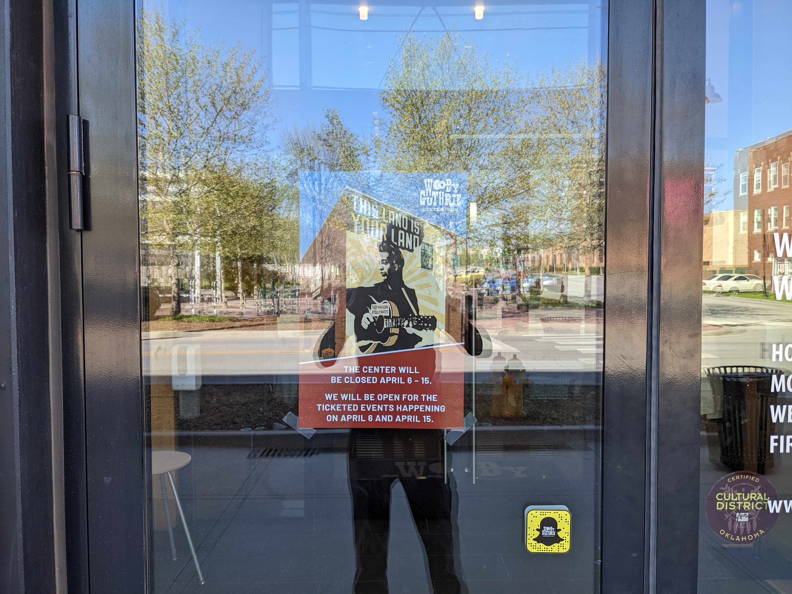
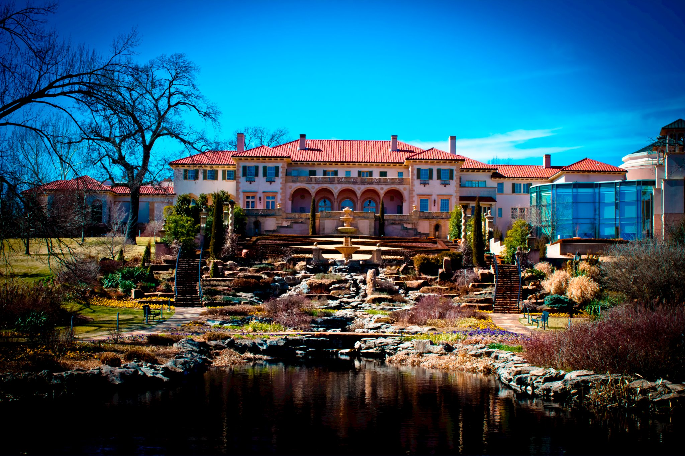

Here is something about Tulsa I will never stop saying, because it keeps proving itself true: this city produces excellent reasons to leave your apartment that most people simply do not know exist. The current best example is happening up on the hill at Gilcrease Museum, completely free of charge, and you are running out of chances to catch it.
It's called UnCrease, and if you haven't heard about it yet, consider this your formal notice, delivered with the urgency the situation deserves.
What Is UnCrease?
UnCrease is Gilcrease Museum's free community arts program running through the end of May 2026. Think of it as a pop-up arts festival that keeps coming back: six dates across two months, 29 local artists, live music, workshops, performances, demonstrations, and lectures, none of it behind a ticket paywall, all of it built around Tulsa voices and the kind of community-first programming that actually deserves an audience.
Saturday sessions run from 1 to 4pm. Thursday evening sessions run from 7 to 9pm. And every single event is free. No tickets to buy, no waitlist to navigate. Just show up.

The full schedule:
- March 14 (Saturday, 1-4pm)
- March 26 (Thursday, 7-9pm)
- April 11 (Saturday, 1-4pm)
- April 23 (Thursday, 7-9pm)
- May 9 (Saturday, 1-4pm)
- May 28 (Thursday, 7-9pm)
Full details and artist lineup at my.gilcrease.org/uncrease.
This Saturday: April 11, 1-4pm
The next date is this Saturday, and the lineup is genuinely worth clearing your afternoon for. Here's what's happening:
1:00-2:00pm, Charles and Peggy Stephenson Family Foundation Sky Stair Landing
Filstrup Resident Artists perform a concert celebrating American West and Indigenous music traditions, featuring mezzo-soprano Barbara McAlister. This is world-class opera. In a museum. For free. On a Saturday afternoon. I truly cannot explain why more people aren't talking about this.

ONEOK Vista Room
Mark Kuykendall creates a live ambient soundscape layered with old family film footage, exploring memory, grief, and the idea of home. Quietly profound stuff.
ONEOK Vista Room Patio
An interactive labyrinth experience overlooking the Osage Hills. Guests inscribe rocks during the walk. It's part meditation, part public art, part standing outside on a beautiful spring day. I'm here for all of it.
ONE Gas Community Room
An interactive presentation featuring historical maps, photographs, and collected audio recordings. The kind of thing that reminds you this land has stories worth slowing down to hear.
2:30-4:00pm, A.R Marylouise Tandy Foundation Entry Lobby
Solo violin performance blending classical, pop, and original compositions. A great way to close out the afternoon.
Why the Queer Community Should Be Here
A few of the artists in this series are gay, and regardless, the spirit of UnCrease is exactly the kind of community-first, locally-rooted arts programming that the queer community in this city has always shown up for and always benefited from in return. Art that costs nothing, made by and for the people who actually live here. That description is us, and we should be in that room.
Gilcrease is also one of the most beautiful spaces in Tulsa, full stop. The views from the Vista Room patio are worth the drive by themselves. The museum sits on 23 acres in the Osage Hills, and on a clear spring Saturday, there is genuinely no better place in town to spend your afternoon, and I say that having spent a considerable number of Tulsa afternoons trying to find something better.

The queer community shows up for art. We always have. This is a chance to show up for Tulsa artists doing work that deserves an audience, in a space that's welcoming to everyone who makes the trip up the hill.
How to Get There
Gilcrease Museum
1400 N Gilcrease Museum Rd, Tulsa, OK 74127
The UnCrease events are free and open to the public. No registration required, just show up.
Questions: 918-596-2783 or lak5621@utulsa.edu
Mark Your Calendar: All Remaining Dates
You've got four more chances to catch UnCrease this spring. Put them in your phone right now:
- April 11 (Saturday, 1-4pm)
- April 23 (Thursday, 7-9pm)
- May 9 (Saturday, 1-4pm)
- May 28 (Thursday, 7-9pm)
Full lineup for each date at my.gilcrease.org/uncrease.
Looking for more events this week? We track 80+ sources every Monday to find every LGBTQ+ event in Tulsa, including community arts like this.
See This Week's EventsFind It
Gilcrease Museum — 2100 N Gilcrease Museum Rd, Tulsa, OK 74127
Know something we don't?
Got an event, venue, or org we should be covering? Hit submit and we'll add it.
Submit an Event →